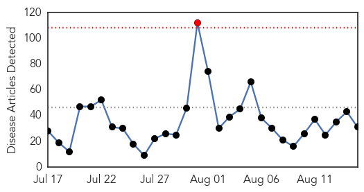
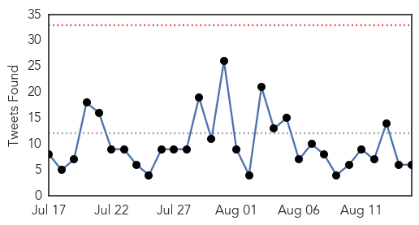
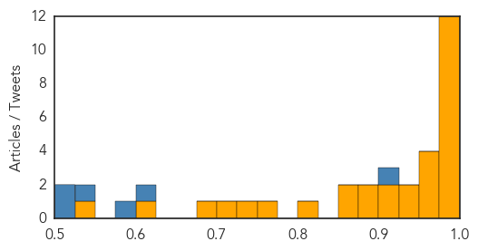
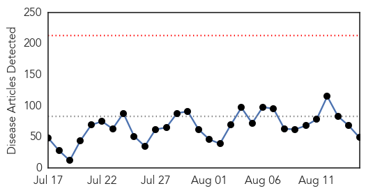
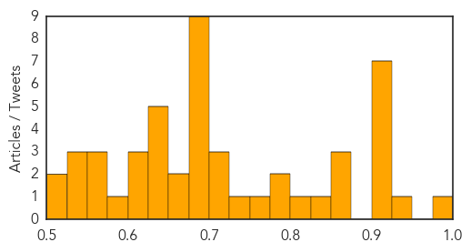

Ebola
30-Day Web Trend
1 alerts, 0 warnings

30-Day Twitter Trend
0 alerts, 0 warnings

Article Locations

Article Confidences
Top Articles:
- 1.000
- Is the Ebola Epidemic Officially Over?
- 0.999
- Guinea Plans Ebola Inoculation Campaign After Vaccine Success
- 0.999
- Another Sierra Leonean doctor infected with Ebola
- 0.998
- Newly Developed Ebola Virus Vaccine 'Highly Effective'
- 0.997
- World Health Organization Reports 100 Percent Success on Ebola Vaccine Testing
- 0.988
- Senegal Still Vigilant Against Ebola
- 0.987
- U.N. official: Ebola epidemic could be defeated by end of 2015
- 0.987
- Sierra Leone ends Ebola quarantine for 500 villagers
- 0.986
- Sierra Leone ends Ebola quarantine for 500
- 0.978
- Sierra Leone ends Ebola quarantine for 500 villagers
- 0.978
- "We can be proud that the international community rallied to support the efforts to defeat Ebola."
- 0.975
- Philstar Mobile
- 0.963
- Sierra Leone Lifts Last Major Ebola Quarantine As Cases Recede
- 0.958
- Sierra Leone lifts last major Ebola quarantine as cases recede
- 0.951
- Sierra Leone lifts last major Ebola quarantine as cases recede
- 0.951
- P4DP Launches Study on Role of Liberia’s Traditional Healers
- 0.947
- KSA can use space technology to prevent Ebola, says expert
- 0.935
- KSA can use space technology to prevent Ebola, says expert
- 0.918
- Sierra Leone: Sierra Leone ends Ebola quarantine for 500 villagers
- 0.912
- In Sierra Leone, hope and challenges as quarantine camp closes
- 0.898
- The Vineyard Gazette - Martha's Vineyard News
- 0.879
- Africa Urged To Take Lead In Addressing Ebola Challenges
- 0.874
- In Sierra Leone, hope and challenges as quarantine camp closes - Sierra Leone
- 0.869
- World Bank Regional Director Pays Courtesy Call on President Koroma
- 0.809
- Mamusa Declaration marks end of ebola in PortLoko
- 0.769
- ACF ends 8-month Ebola prevention, response project in Bomi
- 0.744
- Sierra Leone lifts last major Ebola quarantine as cases recede
- 0.717
- President places Sierra Leone on permanent state of emergency – says SLPP John Benjamin
- 0.693
- Ebola Patient Dr. Kent Brantly Arrives at US Hospital From Liberia
- 0.620
- PROMOTING ACCESS TO INFORMATION… Dr. Tarawally Donates To Bintumani Radio
- 0.547
- Sierra Leone initiates move to lift ban on pilgrims
Top Tweets:
- 0.988
- What World Health Organization Did Wrong On Ebola Response - Daily Signal http://t.co/maaRRQhvoE ebola EVD
- 0.937
- Sierra Leone lifts last major Ebola quarantine http://t.co/OPDK7ZbWVw
- 0.920
- What World Health Organization Did Wrong On Ebola Response http://t.co/TiDcntWrun
- 0.880
- What World Health Organization Did Wrong On Ebola Response - Daily Signal http://t.co/6tDdK3Emwz
- 0.782
- Some Ebola Survivors Still Suffer—And Doctors Don't Know Why - Wired http://t.co/qvRGVRdiGd ebola EVD
- 0.753
- Ebola crisis was not a financial crisis for Dallas area taxpayers - Dallas Morning News http://t.co/gfVAUEVpHd ebola EVD
- 0.712
- Dallas-Area Taxpayers Paid More Than $825K in Ebola Costs - ABC News http://t.co/ILeedRw80L ebola EVD
- 0.668
- .@USAID explores the efforts of Liberia's burial teams in the Ebola outbreak response http://t.co/OLt3xeGioY
- 0.630
- Attention, world: The Ebola fight isn’t over http://t.co/KiVkTIdOe4
Unknown
30-Day Web Trend
0 alerts, 0 warnings

30-Day Twitter Trend
0 alerts, 0 warnings
Article Locations
Article Confidences
Top Articles:
- 0.991
- All tests negative for MERS in Opelika hospital patient - FOX10 News
- 0.929
- California health officials investigating human plague case in Yosemite
- 0.919
- Most Legionnaire's disease deaths tied to plumbing systems, CDC says
- 0.917
- Chicago Tribune
- 0.917
- Chicago Tribune
- 0.917
- Chicago Tribune
- 0.917
- Chicago Tribune
- 0.917
- Chicago Tribune
- 0.912
- Public health warning issued over B.C. shellfish bacteria that sickened 67
- 0.871
- Swimmer Dies from Brain-Eating Amoeba « CBS Las Vegas
- 0.868
- Health officials say 134 cases of salmonella linked to pork
- 0.851
- Brain-Eating Amoeba Contracted From Oklahoma Lake Kills Swimmer
- 0.843
- Sudan: Sudan heatwave kills 15 in Wadi Halfa
- 0.802
- California Department of Public Health and Yosemite National Park Take Preventive Measures in Plague Investigation
- 0.792
- Two Kids Killed By Falling Branch At Yosemite As Plague Forces Campground Closure
- 0.786
- Bird flu spreads to third location in Ivory Coast
- 0.761
- Toxic blue-green algae pose increasing threat to nation’s drinking, recreational water
- 0.741
- Plague: Tuolumne Meadows Campground in Yosemite will be closed next week for flea treatment
- 0.719
- Plague-infected squirrels found at Yosemite National Park campground
- 0.715
- County Health Department urges lake users to be cautious - ObserverToday.com
- 0.703
- Roundup: Lithuania struggling to curb African Swine Fever
- 0.699
- Health advisory lifted for Sunset Bay
- 0.687
- Shelling hits Syrian town after ceasefire collapses
- 0.687
- Scores of migrants die in overcrowded Mediterranean ship
- 0.687
- Lebanon arrests fugitive hard-line cleric Assir
- 0.687
- Japanese emperor expresses 'deep remorse' over World War II
- 0.687
- Islamic State group leader 'raped' US hostage
- 0.687
- Ex-army chief killed as Burundi crisis ‘spirals out of control’
- 0.687
- Dominican Republic jails four Frenchmen in ‘Air Cocaine’ affair
- 0.686
- Taitung township reports first rabies case
- 0.661
- Marshall County Included in State E. Coli Investigation
- 0.656
- Wolf River Blasto cases up to 13
- 0.649
- Senate probe on rise in hand, foot and mouth disease sought
- 0.644
- “In the bulls-eye”: Lower Bucks group spreads awareness of Lyme disease.
- 0.641
- Girl's death not caused by HPV vaccination
- 0.640
- KDHE lifts boil-water order for Dighton
- 0.630
- Families of Legionnaires’ victims hit out at delays
- 0.619
- Bat captured by Milwaukee resident tests positive for rabies
- 0.615
- Zambian president praises Mugabe, tells US and UK off
- 0.607
- Bird flu spreads to third location in Ivory Coast
- 0.598
- 18 Unregulated Chemicals Found In Drinking Water Across The United States
- 0.568
- Health warning issued for Arago
- 0.565
- WAD conducts health camp
- 0.561
- Swedish infant infects four others with resistant bacteria
- 0.531
- Investigation: Is Latest WHO-UNICEF Vaccine Campaign in Africa a Eugenics Program?
- 0.527
- Dighton waiting on word from state on water contamination
- 0.525
- 630 CHED - Edmonton Breaking News, Traffic, Weather and Sports Radio Station
- 0.522
- Gainesville man sleuths for sickness at CDC
- 0.508
- Camper deaths, presence of plague darken summer at Yosemite
Top Tweets:
-
No tweets found for Aug 15, 2015